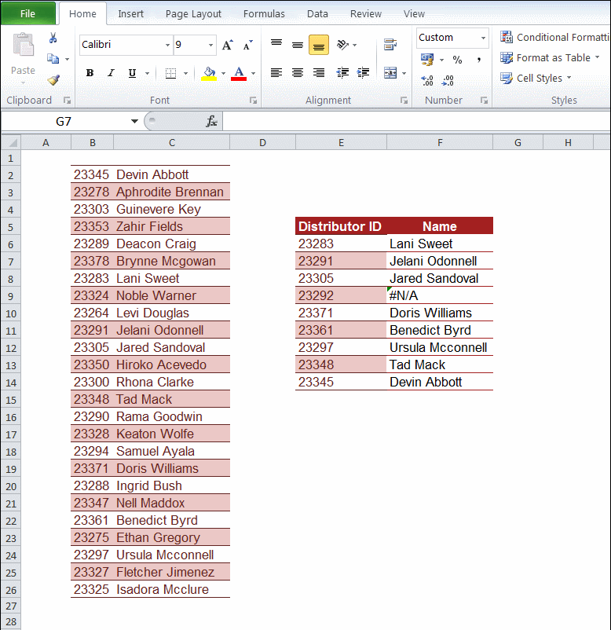

Excel对你来说可能只是电子表格，而对于数据科学家来说Excel是真正能帮助解决问题的数据分析利器。掌握一些常用的Excel使用套路，不仅可以大大提高自己的工作效率，而且也可以帮助别人更好的理解你的数据和你想透过数据表达出的信息。
在上一周，带领大家一起修炼了Excel的心法（入口在此：粗浅地谈一下「Excel之道」），在最后答应要给大家一些Excel的实用招数，这不利用了两天周末时间整理，这些套路和招数在今天就能和大家见面啦。
– 那些可以让你告别「愚蠢」的Excel技巧
这一个小技巧在上一篇文章《粗浅地谈一下「Excel之道」》的最后已经提及。就是按下Alt键的时候，会看到菜单上所有的功能都会出现一个字母提示，紧接着再按下相应的字母就能进入到对应的菜单或是打开对应的功能，因此常常使用这样的Alt+字母，很快就能记住自己平时用得最多一些功能的快捷操作方式了。
有一个经常要做的操作就是选择一整行或一整列的数据，大多数人都是通过鼠标拖拽的方式，而实际上，使用「Ctrl +Shift + 方向」可以实现秒选。
很多人都知道，点击单元右下脚的十字加号后拖动可以实现快速复制，而没有注意到在复制的时候也可以选择是复制数值、格式或是公式。
通过使用Name Range给我们的数据单元格、整列、整行甚至整个数据表指定一个名字，有助于提高在公式中进行数据引用的效率，同时也使得公式更加的清晰易懂。

很多小伙伴都使用过或者熟悉Paste Special，一般情况这个功能的使用方法是这样的：

而实际上我们可以使用Paste Special做更多的事情，比如符号转换和行列转换。
符号转换：
行列转换：
可以使用Text to Columns功能快速的拆分单元格的内容。
–一些快速「 修理」数据的套路
一般来说快速的将某一列排序大家都经常使用，而且也很熟悉了，应该都是通过下面这样的方法来给数据排序的：
那么如果我们需要对上述数据先按照国家首字母排序，再按照收入从高到低排序可不可以呢？没问题，往下看：
使用Subtotal进行数据的简单统计运算比单纯的使用Sum，Average或Count等公式更灵活。
Subtotal和固定的Sum，Average，Count的区别如下：
可见在原来的表格中加入了Subtotal的小计数据对Subtotal的统计结果并不会造成影响，而对于使用Sum，Average或Count的计算结果就会有影响，会导致数据被重复计算的错误。

–「 淘气」 的VLOOKUP？
很多人在使用VLOOKUP时会出现这样或那样的问题，查询的结果总是和自己设想的不太一样，甚至经常感觉自己每次的操作步骤都是相同的，出来的结果却在无规律似的变化。我一开始也会经常困惑于此，觉得这个VLOOKUP功能好淘气啊，直到我发现了问题到根子出在哪儿之后再使用VLOOKUP就显得信心十足了。
所以在介绍VLOOKUP的使用之前，十分有必要先把Excel中单元格的绝对引用机制弄清楚。先看下面错误的动作示范：
可见如果没有使用单元格的绝对引用，Excel在复制和粘贴时，会根据粘贴的单元格的位置自动调整公式中引用的单元格，换句话说，Excel默认的公式中的单元格引用是相对的，因此在上例中，我们要手动将其调整为绝对引用，而调整的方法是在公式中所使用的不需要变换位置的单元格的行列前都加上$符号，可以通过快捷方式F4进行同样的操作。
为了巩固对单元格相对和绝对引用的理解，我们快速的在Excel中构建一个九九乘法表：
VLOOKUP的功能说白了就是用某个值，到某个表里去找到和这个值对应的其它内容，所以VLOOKUP公式的参数主要有三个，用哪个值去查询，去哪个表里去查询，以及需要查询的内容在第几列，以及一个可选的参数是否为模糊查询。瞧下面的例子：
看上去好像VLOOKUP挺成功的，只有两个ID没有找到对应的Name，可是，用肉眼都能看出来最后一个ID：23345在左边的数据表中第一行就已经出现并存在Name的值的，所以这个VLOOKUP是失败了，那么问题出在哪呢？我们把复制过来的公式都显示出来看一看：
问题就是出在我们一开始所说的表格的绝对引用和相对引用上，在复制公式的时候Excel默认的是相对引用的，因而虽然我们要去查询的表格的位置没有变化，但是在复制VLOOKUP的时候，第二个参数所引用的表格位置是随着粘贴的位置不同而跟着变化的，因此在这里我们需要做的就是锁定我们的数据查询区域，因而正确的做法如下：

最后没有找到Name值的只有ID:23292，但是默认的显示#N/A会让使用者感觉不明觉厉，而且也不方便今后的计算，因此我们还可以在VLOOKUP外嵌套IFERROR公式，将不合法的或是错误的结果统一设置成空白。

–帮你提升「 Bigger」 的PIVOT
之前工作中经常会有一种感觉，就是不会用PIVOT都不好意思跟别人说你会Excel。看着别人在给老板看汇总统计的数据报告的时候可以把关键内容显示得清清楚楚、一目了然，而且更重要的是老板只要提出还想看什么别的信息，只要数据里有，秒秒钟就可以捣鼓出来。再回过头来审视自己弄出来的东西真可谓是shit，这是什么啊？真是too young~too simple~~。
那么这种能让数据表呈现出高大上的感觉PIVOT难不难学呢？答案真是：so easy~，跟着做完下面的例子，你自称PIVOT专家也会有人信你，Bigger杠杠地！
我们使用下面这个数据表作为接下来要捣鼓的原始数据，包含的是某公司的销售数据，字段有经销商、国家、产品名称、销售日期、数量、单价和金额等基本数据。
这些天收罗的「Excel之术」就是这一些了，希望对提高大家的工作效率有所帮助。另外顺便提一下的就是在我的「商业分析」系列文章中，有用到一些Excel在数据分析方面的功能，比如线性回归分析，规划救解，模拟分析等等，有兴趣的小伙伴可以移步过去瞧个究竟。
商业分析的套路：